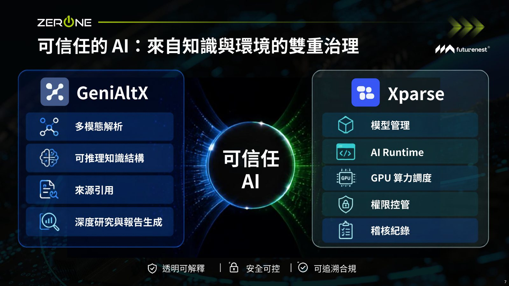
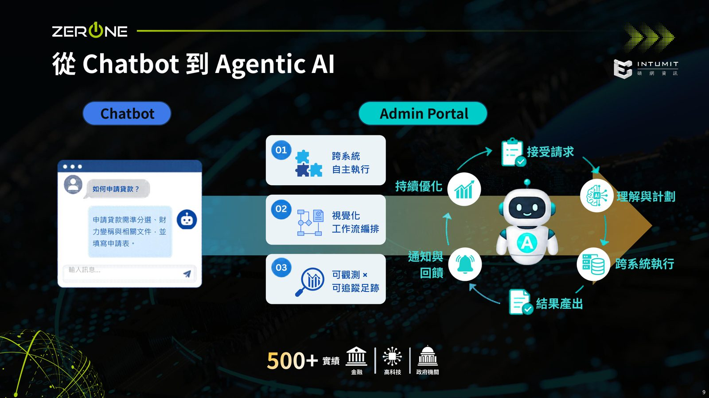
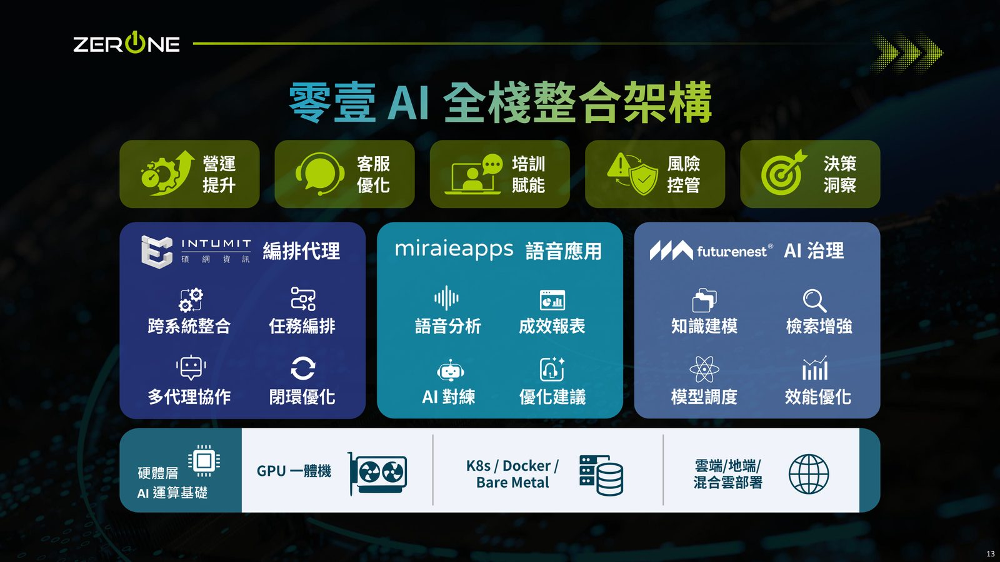
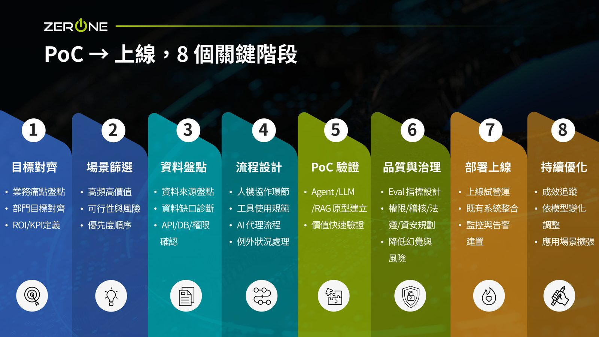

摘要
本講題聚焦企業導入 AI 時常見的「PoC 驗證容易、大規模上線與轉化為行動力難」之落差。為此，講者提出了一套涵蓋硬體、平台與應用層的「全棧整合架構」。在硬體層，透過 K8s/Docker/Bare Metal 進行 GPU 算力管理；在平台層，透過 GeniAltX、Xparse 與 AI Runtime 介接並調用地端與雲端異質模型；在應用層，則以視覺化工作流編排，實踐跨系統自主執行的 Agent（如 NemoClaw）。實務上，此架構已被應用於金融貸款申辦（自動財力驗證與文件填寫）與客服語音深度分析（跨多國語言轉譯與全局風險洞察）。講者建議，企業落地前必須釐清痛點、數位化程度、工作流嵌入必要性，並對齊 IT、業務與治理三方權責，依循 8 步驟方法論逐步推進。
重點整理
- 點出企業導入AI最核心的落差：許多組織能快速做出PoC原型，但要真正大規模上線、產生商業行動力仍有巨大差距。
- 提出全棧整合架構，從硬體層（K8s/Docker/Bare Metal、GPU資源管理）延伸到平台層（含 GeniAltX、Xparse、AI Runtime 等組件），串接地端與雲端算力資源。
- 展示以 Admin Portal Chatbot 結合 Agentic AI 處理貸款申請流程的情境，協助使用者完成資料準備、財力驗證與申請表填寫等步驟。
- 分享語音深度研究與分析應用，可將客服單通對話逐步累積為長期洞察報告，並支援多語言混說情境下的語音分析與人才培訓。
- 提出「PoC到上線」的分階段方法論（約8個步驟），並列出企業在正式導入AI前應先釐清的關鍵問題，包括場景痛點是否清晰、資料數位化是否就緒、AI是否需要嵌入工作流程、以及上線後IT、業務與治理三方權責是否對齊。
重點圖片／架構圖




PoC與落地之間的巨大落差
講者開場即點出，許多企業在AI PoC階段進展快速，但要跨越到真正大規模上線、轉化為實際商業行動力時，往往會遇到巨大落差，這也是整場演講最想與聽眾探討的核心問題。演講從資料引擎的精煉、模型資源管理，一路談到AI價值鏈的深度賦能，強調企業必須有系統性的方法，才能把算力真正轉換為行動力。
全棧整合架構：從硬體到AI應用
講者展示一套涵蓋硬體層到應用層的AI全棧整合架構：硬體層以 K8s、Docker、Bare Metal 為基礎的AI運算基礎設施，並管理GPU資源；平台層則包含 GeniAltX、Xparse、AI Runtime 等組件，作為串連地端開源模型與雲端算力的中介層，供企業自主開發的AI應用（如 NemoClaw、OpenClaw 等）調用LLM服務。
從跨系統自主執行到端到端工作流重塑
演講提到透過視覺化的工作流編排，讓AI能跨系統自主執行任務，並強調流程需具備可觀測與可追蹤的執行足跡。講者以協助使用者辦理貸款申請為例，說明系統如何透過 Admin Portal 上的 Chatbot（結合 Agentic AI）引導使用者完成資料準備、財力驗證與相關文件的申請表填寫。
語音深度研究與跨部門協同
講者也分享語音深度研究與分析的應用情境：從單通客服對話中萃取決策洞察，並將這些洞察由單通逐步累積為年度報告等級的分析，讓企業能從語音資料中看見全局的風險與機會，同時支援多語言混說情境下的語音分析與人才培訓場景。演講並提及跨部門A、B、C之間資料流通、即時共享如何加速協同並帶來精準決策與價值創造。
從PoC到上線的方法論與落地前提問
為了讓AI專案能真正走完全程，講者提出一套約8個步驟的「PoC到上線」方法論，涵蓋前期場景評估、技術可行性驗證、系統整合（API/資料庫）、上線準備與後續的評估優化等階段。同時提醒企業在正式投入AI專案前，應先釐清4個關鍵問題：場景痛點是否清晰、資料數位化是否就緒、AI是否需要嵌入既有工作流程（或只做檢索問答）、以及上線後IT、業務與治理三方的權責是否已對齊，避免因前提不清而導致專案卡關。